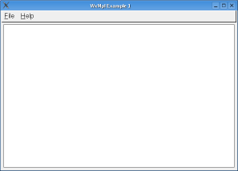
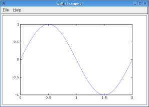
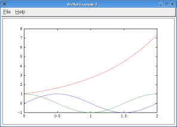
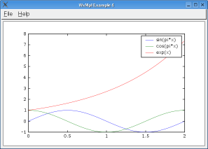
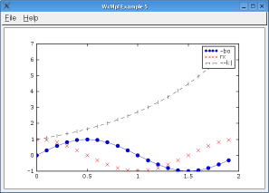
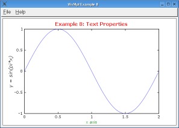
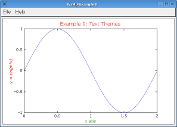
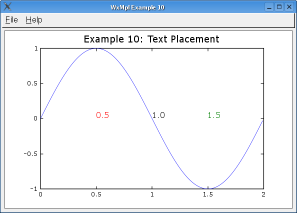
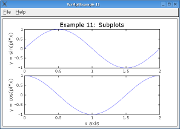

{kind=link}
{kind=link}
{kind=link}
{kind=link}
{kind=link}

Figure 6: Line properties
Ken McIvor
mcivor@iit.edu
WxMpl is a library of wxPython widgets which provide interactive plotting capabilities via the matplotlib 2D plotting library. Although matplotlib excels at generating a variety of publication quality figures, its wxPython widgetry compares poorly with BLT's interactive features. WxMpl aims to remedy this situation by providing out-of-the-box support for basic user interactions while supporting as many of matplotlib's figures and features as possible.
If you're new to Python or need to get back up to speed, I recommend you read the Python Tutorial, the Numerical Python Manual, and the matplotlib tutorial before diving into this tutorial: in the interest of brevity, a working understanding of Python, the Numerical Python extensions, and matplotlib's pylab interface is assumed. That being said, busy scientists should be able to use this guide as a cookbook.
This tutorial is very much so a work in progress. At this point, matplotlib is
discussed more than WxMpl itself. This is in part because the documentation
for matplotlib's object-oriented API is difficult to wade through, and in part
because matplotlib has many more features. I have only had time to scratch
the surface of matplotlib's abilities, although the wxmpl-demos.py script
demonstrates some of the more complicated plots from matplotlib's collection of
examples. Eventually, I'll cover the different ways to use WxMpl and how to
use stripcharting to create plots that update as their data changes. Please
bear with me as I keep improving this tutorial, and feel free to email me with
any questions or problems you have in the meantime.
To understand WxMpl's place in the word, it is necessary to delve briefly into matplotlib's architecture. Under the hood, matplotlib represents each separate unit-of-drawing with an instance of the Figure class. Each Figure has a FigureCanvas associated with it, providing matplotlib with something to draw the figure onto, be it a PNG image or a wxPython window. That's the pertainent the nuts and bolts covered, although the pathologically curious are encouraged to learn more about matplotlib's internals from the "Matplotlib API" chapter of The Matplotlib User's Guide.
In order to support as many of matplotlib's features as possible, WxMpl enters the scene at the lowest level possible, defining an alterative FigureCanavas for matplotlib to use. As a result, figures must be constructed using matplotlib's object-oriented API, rather than its Matlab-compatible pylab interface. This is a bit unfortunate, because the documentation of the OO API is sparse compared to that of the pylab interface.
Using WxMpl in an application involves creating a PlotPanel, getting its associated Figure, and then using matplotlib's OO API to draw things. WxMpl also has a PlotFrame and a PlotApp. As its name implies, the PlotFrame is a top-level wxPython window that already contains a PlotPanel. The PlotApp is a complete wxPython application which creates a PlotFrame for you. All three of these classes have the same plotting API, so they can be used interchangabely.
Our first example will demonstrate the boilerplate code used in all of the other examples in this tutorial.
# load WxMpl's Python module
import wxmpl
# Create the PlotApp instance.
# The title string is one of several optional arguments.
app = wxmpl.PlotApp('WxMpl Example 1')
# <== This spot is where the plotting happens
# Let wxPython do its thing.
app.MainLoop()
Listing 1: Anatomy of an example
As you can see in the screen shot below, this is not a dreadfully exciting example: the plot window is completely empty. This should come as no surprise, since this example made no effort to plot anything.

Figure 1: Anatomy of an example
Let's proceed onward to the "Hello World" of plotting examples: the venerable
sin() plot. This example will demonstrate how to retrieve the matplotlib
Figure object and plot y = sin(pi*x) in it. This example also imports some
functions from the matplotlib.numerix module.
Numerix is a compatibility layer for Python's two array libraries, NumPy and NumArray, and is used in all of these examples to ensure cross-platform compatibility. If you're going write applications that use matplotlib, you may want to consider taking advantage of Numerix for the same reason.
Please note that the boilerplate code presented in Example 1 has been omitted here. To run this example, paste it where the "This spot is where the plotting happens" line is in Example 1, or take a gander at the full source code.
### Create the data to plot ###
from matplotlib.numerix import arange, pi, sin
x = arange(0.0, 2, 0.01)
y = sin(pi*x)
### Plot it ###
# All of WxMpl's plotting classes have a get_figure(),
# which returns the associated matplotlib Figure.
fig = app.get_figure()
# Create an Axes on the Figure to plot in.
axes = fig.gca()
# Plot the function
axes.plot(x, y)
Listing 2: A simple plot
That's more like it, eh? You might have noticed that we're not asking a whole
lot of matplotlib's Figure class in this example, making just one call to its
gca() method. This arrangement is typical, since Figures have
another class to do most of the the heavy lifting for them: Axes. It may
come as no surprise, then, that gca is an acronym for "get current axes".

Figure 2: A simple plot
What's all this business about Axes? Like Matlab, matplotlib supports
subplots, e.g. having more than one plot in a figure. To pull this off neatly,
responsibility for drawing these plots is delegated to the Axes, making it
arguably the most important class in matplotlib. As long as we're not creating
subplots, Figure's gca() method will be sufficient for our purposes.
As you've probably guessed, plot() is the Axes method which defines line
plots. The following series of examples demonstrates how to plot multiple
lines, display an Axes legend, use format strings, and control the properties
of the plotted lines.
Plotting multiple lines on an Axes is straightforward:
### Create the data to plot ###
from matplotlib.numerix import arange, pi, sin, cos, exp
x = arange(0.0, 2, 0.01)
y1 = sin(pi*x)
y2 = cos(pi*x)
y3 = exp(x)
### Plot it ###
fig = app.get_figure()
axes = fig.gca()
# Call plot() once for each line
axes.plot(x, y1)
axes.plot(x, y2)
axes.plot(x, y3)
Listing 3: Plotting multiple lines

Figure 3: Plotting multiple lines
Although these calls to plot() could be rewritten as one call, axes.plot(x,
y1, x, y2, x, y3), I recommend that you keep them separate. Doing so
increases readability and allows you specify different line properties for each
line. This is especially handy when creating an Axes legend, as the following
example illustrates.
### Create the data to plot ###
from matplotlib.numerix import arange, pi, sin, cos, exp
x = arange(0.0, 2, 0.01)
y1 = sin(pi*x)
y2 = cos(pi*x)
y3 = exp(x)
### Plot it ###
fig = app.get_figure()
axes = fig.gca()
# `label' is the line property that matplotlib uses
# to create the Axes legend.
axes.plot(x, y1, label='sin(pi*x)')
axes.plot(x, y2, label='cos(pi*x)')
axes.plot(x, y3, label='exp(x)')
# Create the legend
axes.legend()
Listing 4: Axes legends
Like plot(), the legend() method can be called in several different ways.
It also accepts several keyword arguments that can be used to specify certain
legend properties. For detailed explaination of the different ways to call
legend() and what the legend properties are, please refer to the matplotlib
documentation.

Figure 4: Axes legends
Now that we have some way of identifying the different lines of a plot, we can
demonstrate how to specify different line styles by combining them into format
strings. Since matplotlib lets you specify the type, color, and symbol of a
line, there are a lot of line styles; see the matplotlib
documentation for their descriptions. Format strings are passed as
the third argument to plot(). If no format string has been specified,
matplotlib cycles through a permutation of line types, colors, and symbols.
### Create the data to plot ###
from matplotlib.numerix import arange, pi, sin, cos, exp
x = arange(0.0, 2, 0.1)
y1 = sin(pi*x)
y2 = cos(pi*x)
y3 = exp(x)
### Plot it ###
fig = app.get_figure()
axes = fig.gca()
# solid line, blue, circle symbols
axes.plot(x, y1, '-bo', label='-bo')
# no line, red, cross symbols
axes.plot(x, y2, 'rx', label='rx')
# dashed line, black, vertical line symbols
axes.plot(x, y3, '--k|', label='--k|')
axes.legend()
Listing 5: Line styles

Figure 5: Line styles
In addition to the line type, color, and symbol, matplotlib grants control over
several other line properties. These properties are provided as keyword
arguments to the plot() method. Two of the most useful ones are linewidth
and markersize, both of which take a decimal size in units of points. The
matplotlib tutorial describes the other line properties.
### Create the data to plot ###
from matplotlib.numerix import arange, pi, sin, cos, exp
x = arange(0.0, 2, 0.1)
y1 = sin(pi*x)
y2 = cos(pi*x)
### Plot it ###
fig = app.get_figure()
axes = fig.gca()
axes.plot(x, y1, '--b', label='LW=1', linewidth=1)
axes.plot(x, y1+0.5, '--r', label='LW=2', linewidth=2)
axes.plot(x, y1+1.0, '--k', label='LW=3', linewidth=3)
axes.plot(x, y2, 'xr', label='MS=3', markersize=3)
axes.plot(x, y2+0.5, 'xk', label='MS=5', markersize=5)
axes.plot(x, y2+1.0, 'xb', label='MS=7', markersize=7)
Listing 6: Line properties
Figure 6: Line properties
The Axes class has methods that allow you to specify the plot title and the labels of the X and Y axes:
### Create the data to plot ###
from matplotlib.numerix import arange, pi, sin
x = arange(0.0, 2, 0.01)
y = sin(pi*x)
### Plot it ###
fig = app.get_figure()
axes = fig.gca()
axes.plot(x, y)
# Label the plot
axes.set_title('Example 7: Titles and Labels')
axes.set_xlabel('x axis')
axes.set_ylabel('y = sin(pi*x)')
Listing 7: Titles and labels
Figure 7: Titles and labels
These methods accept several keyword arguments that that can be used to specify certain text properties, such as font, weight, and size. The matplotlib tutorial documents all of these properties.
### Create the data to plot ###
from matplotlib.numerix import arange, pi, sin
x = arange(0.0, 2, 0.01)
y = sin(pi*x)
### Plot it ###
fig = app.get_figure()
axes = fig.gca()
axes.plot(x, y)
# Red, Bold, 12pt
axes.set_title('Example 8: Text Properties', color='r',
fontweight='bold', fontsize=12)
# Green, `smaller' size
axes.set_xlabel('x axis', color='g', fontsize='smaller')
# Italic
axes.set_ylabel('y = sin(pi*x)', fontstyle='italic')
Listing 8: Text properties

Figure 8: Text properties
These methods also accept, as their optional second argument, a Python dictionary of property/value pairs. Since you can also specify additional text properties as keyword arguments, you can effectively create themes:
### Create the data to plot ###
from matplotlib.numerix import arange, pi, sin
x = arange(0.0, 2, 0.01)
y = sin(pi*x)
### Plot it ###
fig = app.get_figure()
axes = fig.gca()
axes.plot(x, y)
theme = {'color': 'r', 'fontsize': 10}
axes.set_title('Example 9: Text Themes', theme, fontsize=12)
axes.set_xlabel('x axis', theme, color='g')
axes.set_ylabel('y = sin(pi*x)', theme, fontstyle='italic')
Listing 9: Text themes

Figure 9: Text themes
Text may also be placed at arbitrary X, Y coordinates within a plot, using the
Axes text() method. This method accepts the same optional dictionary and keyword arguments as the title and label methods discussed above.
### Create the data to plot ###
from matplotlib.numerix import arange, pi, sin
x = arange(0.0, 2, 0.01)
y = sin(pi*x)
### Plot it ###
fig = app.get_figure()
axes = fig.gca()
axes.plot(x, y)
axes.set_title('Example 10: Text Placement')
theme = {'fontname': 'courier', 'fontsize': 12}
# text(x, y, string, [theme-dictionary,] [text properties])
axes.text(0.5, 0, '0.5', theme, color='r')
axes.text(1.0, 0, '1.0', theme, color='k')
axes.text(1.5, 0, '1.5', theme, color='g')
Listing 10: Text placement

Figure 10: Text placement
As mentioned earlier, matplotlib has the ability to display subplots, drawing
multiple Axes on a single figure. Instead of using the Figure's gca() method
to get the Axes to plot with, the add_subplot() method is used to add create
each Axes. This method takes three arguments: the desired number of subplots,
the row of this Axes, and the column of this Axes. The rows and columns are
numbered from one.
### Create the data to plot ###
from matplotlib.numerix import arange, pi, sin, cos
x = arange(0.0, 2, 0.01)
y1 = sin(pi*x)
y2 = cos(pi*x)
### Plot it ###
fig = app.get_figure()
# Create the subplot Axes
axes1 = fig.add_subplot(2, 1, 1)
axes2 = fig.add_subplot(2, 1, 2)
axes1.plot(x, y1)
axes2.plot(x, y2)
# Subplots must be labeled carefully, since labels
# can be accidentally hidden by other subplots
axes1.set_title('Example 11: Subplots')
axes1.set_ylabel('y = sin(pi*x)')
axes2.set_xlabel('x axis')
axes2.set_ylabel('y = cos(pi*x)')
Listing 11: Subplots

Figure 11: Subplots
{kind=link}
{kind=link}
{kind=link}
{kind=link}
{kind=link}